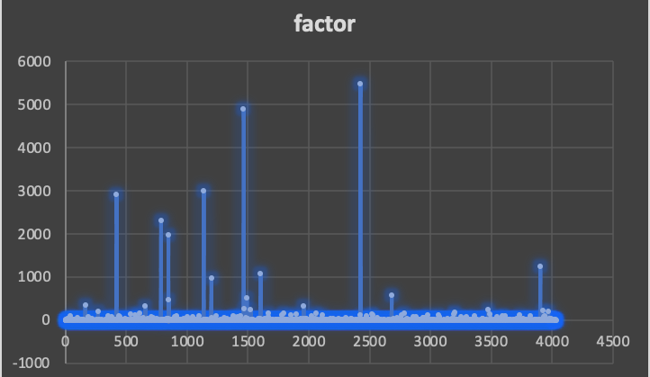
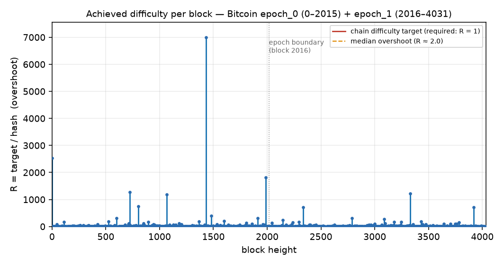

P2Pool scientific basics
The relation between the block hash and the block difficulty target in the Bitcoin blockchain is based on the concept of mining difficulty. The block difficulty target determines the level of computational effort required to mine a block. Here's how the block hash and difficulty target are related:
The difficulty target represents a numerical value that determines the difficulty level for mining a block. It is a 256-bit number used to measure the difficulty of finding a block hash that satisfies certain conditions.
The target difficulty is inversely proportional to the mining difficulty. Higher difficulty values indicate a lower target difficulty, requiring more computational effort to find a valid block hash.
The block hash is a 256-bit number obtained by hashing the block header data using the SHA-256 hashing algorithm.
Miners aim to find a block hash that is below the current difficulty target. In other words, they need to find a hash that is numerically smaller than the target difficulty value.
The mining difficulty is calculated based on the target difficulty. It represents the average number of hash calculations required to find a valid block hash.
Higher difficulty values indicate a lower probability of finding a valid block hash, requiring more computational power and time.
To check if a block hash satisfies the difficulty target, the hash is compared to the target difficulty value. If the hash is smaller than the target difficulty, it is considered a valid block hash.
It's important to note that the difficulty target is adjusted periodically (every 2016 blocks in the case of Bitcoin) to maintain the desired block production rate of approximately one block every 10 minutes. The adjustment is made based on the time it took to mine the previous 2016 blocks, as explained in the previous responses.
The block difficulty target and the block hash are intricately linked in the mining process. Miners continuously generate hashes, searching for a hash that meets the current difficulty target. The search involves adjusting a nonce value in the block header and rehashing the data until a suitable hash is found.
In the Bitcoin blockchain, the terms “target” and “real target” refer to different representations of the difficulty level for mining a block. Here's what each term means:
The target, also known as the difficulty target, is a value derived from the “bits” field in the block header. The “bits” field encodes the target difficulty as a compact representation.
The target is a 256-bit number that represents the difficulty level in a compact form. It is used to determine the minimum requirement for a block hash to be considered valid.
The target difficulty is inversely proportional to the target value. A higher target value represents a lower difficulty level, requiring more computational effort to find a valid block hash.
The real target, also known as the difficulty target derived from the block hash, is a value calculated from the block hash itself.
To calculate the real target, the block hash is compared to the maximum target value (2^256 − 1). If the block hash is numerically smaller than the maximum target, the real target is determined as the ratio between the maximum target and the block hash.
The real target represents the actual difficulty level implied by the block hash. It gives an indication of the relative difficulty of finding that particular block hash.
The relationship between the target and real target is based on the fact that both represent the difficulty level but in different forms. The target is derived from the block header's “bits” field, while the real target is calculated from the block hash itself.
To summarize, the target is the difficulty level encoded in a compact form, while the real target is the difficulty level derived from the actual block hash. The real target is calculated to assess the relative difficulty of finding a particular block hash compared to the maximum target value.


The division of the block target by the block hash (target/hash) is used to determine the relative difficulty of finding a valid block hash. The target difficulty is represented by a 256-bit number, while the block hash is also a 256-bit number. Here's what the relation between the target and hash represents:
Dividing the target difficulty by the block hash provides a measure of the relative difficulty of finding a valid hash.
A lower target value will result in a higher difficulty ratio (target/hash), indicating that it is more challenging to find a hash that satisfies the difficulty criteria.
Conversely, a higher target value will result in a lower difficulty ratio (target/hash), indicating that it is comparatively easier to find a hash that meets the difficulty criteria.
The mining difficulty is directly related to the target/hash ratio.
Higher difficulty ratios indicate higher mining difficulty, requiring more computational effort to find a valid block hash.
Lower difficulty ratios indicate lower mining difficulty, meaning it requires less computational effort to find a valid block hash.
The target difficulty is derived from the “bits” field in the block header, which represents a compact representation of the target. The target is calculated by taking the first three bytes of the bits field as the exponent and the following four bytes as the mantissa. The formula to calculate the target difficulty from the bits field is:
target = mantissa * 2^(8 * (exponent - 3))
By dividing the target difficulty by the block hash, you get a relative measure of how far the actual block hash is from the target difficulty. A lower value indicates that the block hash is closer to the target, meaning the block was mined with less difficulty. A higher value indicates that the block hash is further from the target, suggesting that more computational effort was required to find a valid block hash.
This division is useful in understanding the relative efficiency of the mining process and comparing the difficulty of mining between different blocks.
The real target above is the achieved difficulty of a hash — how far below its target it happened to fall. It is tempting to pay miners in proportion to it: “you found a rarer hash, you earn more.” This is wrong, and provably so.
Achieved difficulty is pure luck. Conditioned on meeting the target, the overshoot R = target/hash follows a power law, Pr[R ≥ r] = 1/r, whose mean does not converge: a single fortunate hash can exceed the sum of all others by a factor on the order of the whole hash space. Paying by achieved difficulty would let one lucky share take an entire payout window — re-importing into the pool exactly the variance that pooling exists to remove.
Work is therefore credited by the target a share was required to meet, never by the value its hash happened to reach. Two shares meeting the same target are paid equally — the accounting stays luck-neutral.
Achieved difficulty is not useless, though: while it cannot weight a payment, the largest achieved difficulties a worker produces can estimate how much total work it did, including work that never met the share target — so a worker too weak to ever find a share can still be credited for the work it actually performed. Measurement, not payment. This is the foundation of the V37 work-receipt accounting — see the Purple Paper, §5 (Proof-of-Work as Measurement) and §8 (Recovering Work Below the Order).
P2Pool scientific basics — republished and version-controlled. V37 Purple Paper →